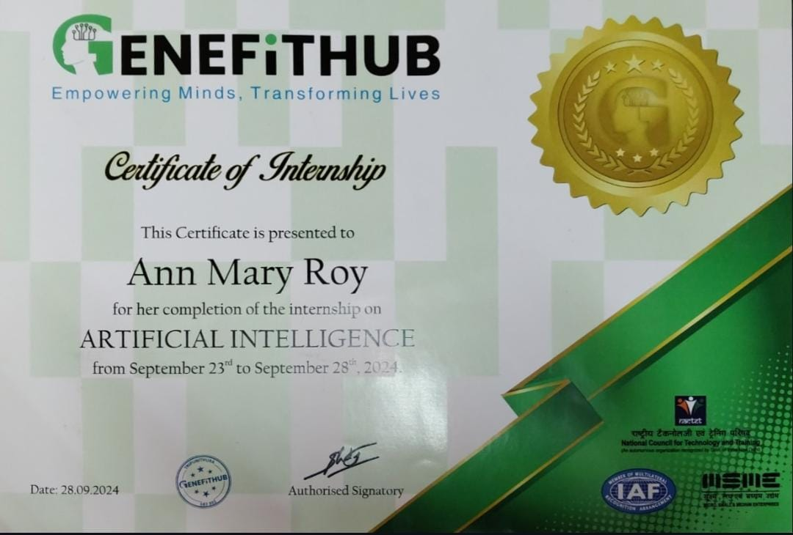

MCA Student
Building a strong foundation in computer applications.
OPEN TO OPPORTUNITIES
Hello, I'm
I am a passionate MCA student with an interest in software development, Python programming, web application development, and machine learning. I enjoy building practical applications, learning new technologies, and developing solutions to real-world problems.
Add your resume as resume.pdf in the portfolio folder to enable the download.
A LITTLE ABOUT ME
Curious by nature. Focused on building useful things with technology.
I am Ann Mary Roy, currently pursuing my Master of Computer Applications (MCA) at Marian College Kuttikkanam Autonomous.
I have a Bachelor of Computer Applications (BCA) background and practical experience in Python development, Django web development, database management, and machine learning fundamentals.
I enjoy working on real-world software projects, exploring new technologies, and continuously improving my technical and problem-solving skills.
My goal is to build a successful career as a software developer and contribute to innovative technology solutions.
Building a strong foundation in computer applications.
Creating practical applications with Python.
Developing database-backed web applications.
Exploring core concepts and applied models.
MY ACADEMIC JOURNEY
Learning, growing, and preparing for what comes next.
Marian College Kuttikkanam Autonomous
Mar Augusthinose College, Ramapuram
TOOLS OF THE TRADE
A growing toolkit for designing, building, and understanding software.
LEARNING THROUGH EXPERIENCE
Professional learning experiences in software and artificial intelligence.
Webandcrafts
Python Developer Intern position.
GENEFITHUB
Certificate date: 28 September 2024.
View certificate detailsSELECTED WORK
Practical applications and machine learning explorations.
A full-stack e-commerce web application developed using Django. The project uses Cookiecutter Django and includes backend development, database integration, and containerization with Docker.
View Source CodeA Django-based online surgical equipment management system designed to support surgical product management and online shopping workflows.
View Source CodeA web-based jewellery rental application developed to provide an online platform for browsing and renting jewellery products.
View Source CodeA machine learning implementation that demonstrates the relationship between one independent variable and a dependent variable using simple linear regression.
View Source CodeA machine learning implementation that predicts a dependent variable using multiple independent variables.
View Source CodeA machine learning implementation demonstrating logistic regression for classification problems.
View Source CodeA machine learning implementation demonstrating the K-Nearest Neighbour algorithm for classification.
View Source CodeA machine learning implementation demonstrating polynomial regression for modelling nonlinear relationships between variables.
View Source CodeLEARNING MILESTONES
Recognizing learning experiences and professional development.

ENEFITHUB
Add the original image as images/certificates/ai-internship-certificate.jpg to enable preview and viewing.
HAVE A QUESTION OR OPPORTUNITY?
I am interested in software development opportunities, internships, and professional collaborations. Feel free to connect with me.